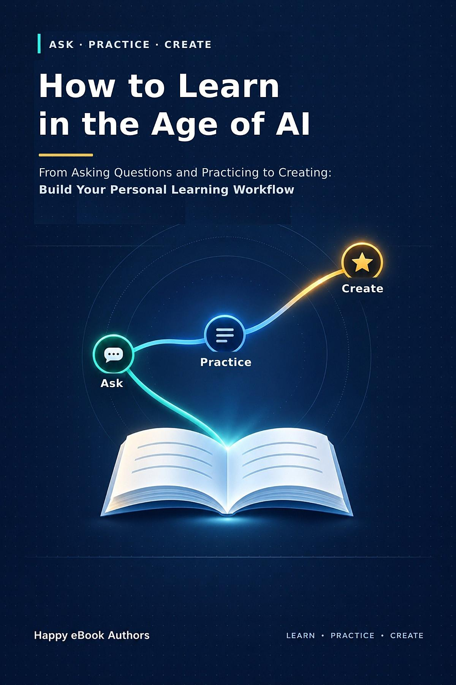

How to Learn in the Age of AI
From Asking Questions and Practicing to Creating: Build Your Personal Learning Workflow

How to Learn in the Age of AI
From Asking Questions and Practicing to Creating: Build Your Personal Learning Workflow
Bookmarking more courses and AI tutorials is easy; knowing what to learn right now, practicing until you can execute on your own, and verifying whether AI assistance has actually made you more capable is the hard part. How to Learn in the Age of AI: From Asking Questions and Practicing to Creating: Build Your Personal Learning Workflow is written for working knowledge professionals and career switchers. You do not need a programming background or any specific brand of AI tool. Starting from a single real work bottleneck—or a safe synthetic practice scenario if you are between roles or handling confidential data—this book guides you through one complete, repeatable learning loop across three parts and ten focused chapters: • Part I — Choose the Right Direction: Turn vague ambitions like “learn AI” into a concrete Learning Problem Card, compare transferable, domain, and tool capabilities with explicit criteria, establish an unassisted baseline work sample and four-level evaluation rubric, and map out a sustainable weekly learning path with a fallback scope for busy weeks. • Part II — Build an Effective Learning Loop: Use AI as a diagnostic questioner, graded-hint coach, and rubric-based reviewer rather than an answer generator. Isolate weak sub-skills through deliberate practice, retain knowledge through closed-book retrieval and adaptive spacing, and test transfer by changing one task condition at a time. • Part III — Deliver Work and Keep Updating: Assemble your practice into an inspectable work deliverable, audit AI outputs by separating factual claims, inferences, recommendations, and unknowns against primary sources, protect confidential and personal data, and run an evidence-based retrospective to decide whether to continue, change methods, narrow scope, or stop. Included in the Appendix: • Worksheets A–G: Reusable templates for problem definition, capability prioritization, four-level performance rubrics, the five-step AI Hint Ladder, deliberate practice and spaced retrieval logs, AI disclosure checklists, primary-source and privacy gates, and a full-cycle completion checklist. • Appendix H: An end-to-end synthetic data walkthrough illustrating how a career switcher moves from an initial problem card to a verified one-page operations analysis deliverable. Scope and Honest Boundaries: Workplace scenarios in this book are synthetic method illustrations rather than real interviews or client stories. Research citations (including cognitive psychology reviews, National Academies learning syntheses, UNESCO generative AI guidance, and recent university trial working papers) explicitly state their scope and limitations. This book does not guarantee employment, promotion, income, or a fixed speed of mastery, nor does it replace legal, medical, financial, security, or organizational policy judgment.